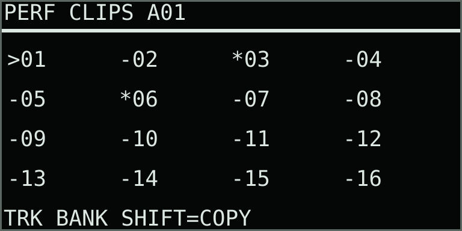
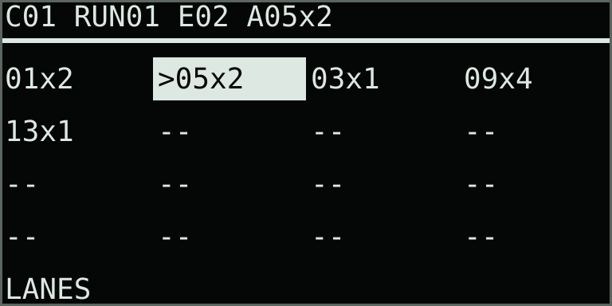
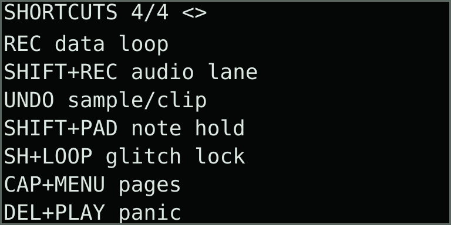

Screen guide
Interface tour
The waveform page is for playing and seeing motion. Parameter pages assign the eight encoders to the names and values shown on screen. Dedicated overview screens provide access to clips, chains, samples, the System Report, and shortcuts.
Move panel layout
- Display. Shows waveforms, playheads, stack markers, parameter pages, clips, chains, the browser, the System Report, and shortcuts.
- Encoders 1–8. Control the eight parameter cells currently shown. Their response is slowed by 50% for precise adjustment; one-shot actions still respond to the first turn. Reserved cells deliberately do nothing.
- Main wheel. Selects lanes or browser entries. Its click toggles performance recording from Main and confirms browser choices.
- Track 1–4. Selects the lane used for capture and editing. Shift+Track opens its source browser.
- 32 pads. Play up to eight voices. Pressure moves each held voice's stack offset when Pressure is Offset.
- Step 1–16. Selects a performance clip in the current A–D bank and addresses entries in Clips and Chain views.
- Play. Stops or resumes performance-loop playback. Shift+Play cycles Main → Clip Overview → Chain → Main.
- Record. Starts or stops performance-data capture. Shift+Record records stereo audio into the selected lane; Delete+Record removes the newest overdub take.
- Loop. Holds or resumes stack scanning. Shift+Loop controls Glitch Buffer Lock.
- Back and Menu. Menu toggles the waveform and parameter pages; Shift+Menu opens System Report / Shortcuts. Back closes a secondary view or saves and exits from Main. Shift+Back performs the one-level safety undo.
- Left / Right arrows. Select performance-clip bank A–D from the waveform and parameter pages.
- + / − keys (Up / Down). Transpose the pad grid by octave on the waveform page, move through parameter pages, set Chain repeats, or browse lists according to the current view.
- Delete. Delete+Step resets a clip or removes a Chain entry; Delete+Record removes the newest overdub take; Delete+pad clears a cue. Shift+Delete clears the selected audio lane.
- Shift. Accesses audio recording, lane-source browsing, System Report / Shortcuts, clip copy and move, Glitch Buffer Lock, and the safety-undo combinations documented in Shortcut Reference.
Waveform page
THRU LANES A01 V3 means the Lanes engine is active, clip A01 is selected, and three voices are held. PLAY 13.6b SYNC 1.00x reports a running Beat Sync clip, its length, rate, and take count.| Display element | Meaning |
|---|---|
| Header | Active engine, clip address A01–D16, held voice count, and audio/data recording state. |
| Rows 1–4 | The four stereo lane waveforms. The left marker selects the lane used by recording, loading, and editing. |
| Small lane bar | The current contribution of that lane to the displayed voice's crossfade. |
| Vertical lines | Independent sample playheads for held voices. They disappear on note-off while the short release continues. |
| Hollow markers | Each voice's lane-stack position. A marker between rows means adjacent lanes are being crossfaded. |
| Position / Field ticks | Position is the short vertical tick at the top of the waveform area; Field is the short vertical tick at the bottom. |
| Short lane ticks | Detected transient divisions on the selected lane. |
| Bottom progress line | Position inside the current performance-data loop. |
| Footer | Clip transport, source ownership, waveform scanning, load errors, or the most recent action. |
Waveform encoder layout
The waveform page keeps one physical layout across every playback engine. Engine-specific controls never replace shared controls in this view.
| Knob | Display | What it controls |
|---|---|---|
| 1 | POS | Position within the source. |
| 2 | FLD | Width of the readable source field. |
| 3 | SPD | Source transport speed. |
| 4 | STAK | Manual lane or moving stack path's starting offset. |
| 5 | RATE | Stack-scan cycles per second. |
| 6 | JOIN | Seam and transition smoothing. |
| 7 | MODE | The selected engine's primary playback mode. |
| 8 | LEVL | Instrument level into the mastering stage. |
Glitch therefore uses RATE for the lane-stack scan beneath its history buffer and JOIN for that source's seams. Sample uses JOIN to crossfade its Loop boundary. Glitch's Buffer and Override controls remain on Glitch Clock. Cutups, Sample, and Slices do not use continuous stack scanning; turning RATE while one of those engines is selected retains the shared value for the next engine that uses it.
Live control safety: continuous controls glide to their new values, event controls are adopted by the next grain, cut, or cycle, and changes that replace a reader use a short transition. Wavesets waits for a rendered zero crossing or low-level point and overlap-adds the old and new readers. Bits, Rate reduction, and Glitch can still create deliberate digital edges. With BITS 0.00, RATE 1, and System Report's Deadline Misses count at zero, an isolated click is not expected.
Parameter pages
> appears before the page title.Choose Motion, Lanes, Grains, Cutups, Sample, Slices, Glitch, Weave, or Wavesets.
Center the readable source field.
Set the width around Position.
Set source transport speed.
Set the manual lane or a moving path's starting offset.
Set stack cycles per second.
Smooth seams and transitions.
Set final playback gain.
Use Up/Down while parameters are open to move through pages. Each parameter has one location: shared controls stay on the same shared page, while engine-only controls appear on separate contextual pages. The title fraction is current page / total pages, so its denominator changes with the selected engine. Mix / Rec, Effects, Stereo / Rotary, Tape, Sample Edit, Performance Loop, Overdub Takes, and Chain follow every engine's contextual pages.

Reserved positions: an unlabelled hollow box means that encoder has no assignment on this page. Turning it has no effect.
Stack Start versus Scan Rate: Stack Start is the exact crossfade position only when Path is Manual. On moving paths it seeds each new voice's phase; Scan Rate then advances from there. Press Loop to freeze every voice at its exact audible blend—even between lanes. A released pad returns to that same blend if pressed again while Hold remains active. Press Loop again to clear those retained positions and resume. Performance recording stores these Hold/Run changes and the exact positions of held voices. Tape INRT can add a wet-path mechanical stop/start to the same gesture. In Glitch, Shift + Loop instead freezes the recent repeat histories while Stack Path can continue.
Secondary screens





View navigation
| Gesture | From | Result |
|---|---|---|
| Menu | Main or Parameters | Toggle waveform and parameter pages. |
| Shift + Menu | Most views | Open or close System Report / Shortcuts. Left/Right, Up/Down, or the main encoder changes its page. |
| Shift + Play | Main / Clips / Chain | Cycle Main → Clips → Chain → Main. |
| Shift + Track 1–4 | Main or Parameters | Open Move Samples and Thru Recordings for that lane. |
| Back | Secondary view | Return toward the waveform page. From Main, save and exit. |
LED language
In a named Keys scale, playable pads are dark neutral grey and tonic pads are full white. The strong brightness contrast makes tonics easy to read while keeping the scale map separate from the eight voice-slot colors: red, orange, yellow, green, azure, blue-violet, purple, and magenta. The complete recalled scale map appears when takeover opens. A momentary pad turns off after release. A Shift+pad latch remains lit until toggle-off or its Hold Off timer expires; after an octave, Root, or Scale change, its color dims when the stored pitch no longer matches that pad and brightens again when the original mapping returns. Step keys use this clip language:
- White: occupied clip.
- Orange: selected clip, stopped.
- Green: selected clip, playing.
- Red: performance recording.
- Blue-violet: queued clip.
The Play key turns green while the performance loop runs. The Loop key is orange for Glitch Buffer Lock, bright white for a live Stack Hold, yellow for a Stack Hold recalled from the playing clip, and dim while both stack scan and Glitch history are live. Record is red for data capture and orange for audio-lane capture.